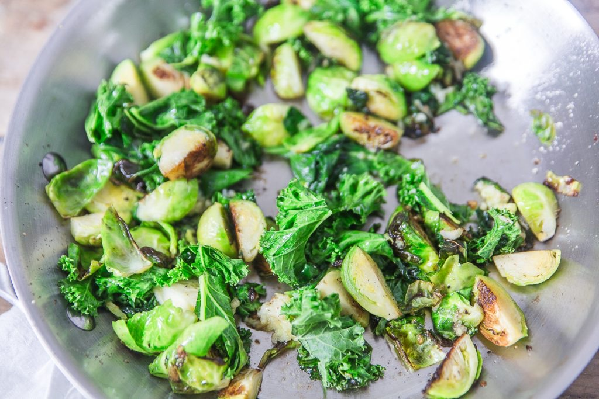
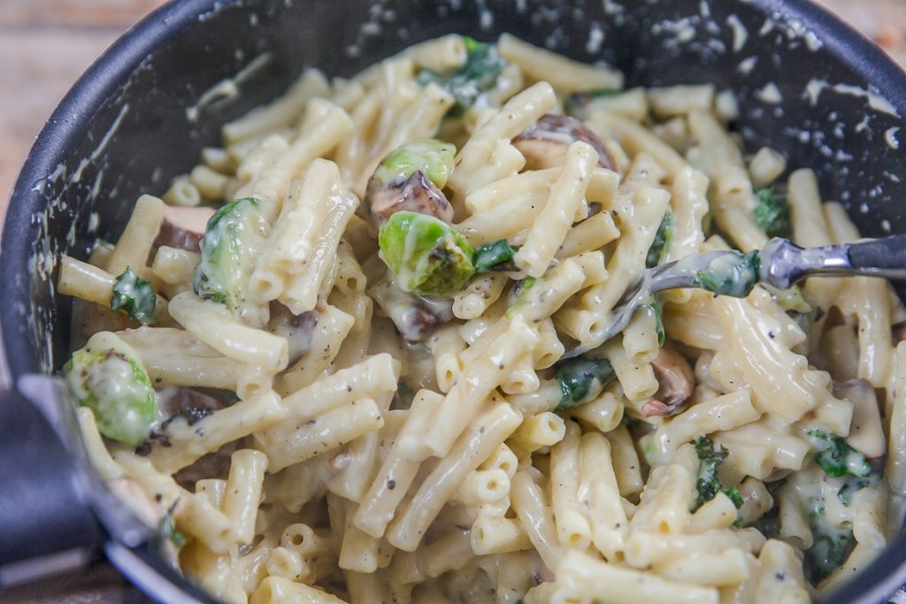

Mac and Cheese aux deux choux

Aujourd’hui je vous retrouve avec une recette ultra-réconfortante!!! Il s’agit d’une version « automnale » bien à moi du mac and cheese aux choux de Bruxelles et chou Kale.
Bon on est d’accord choux de Bruxelles et chou Kale il n’y a pas moins vendeur que ça pour mettre en avant une recette^^. De mon côté je peux apprécier les choux de Bruxelles s’ils sont cuisinés (et bien cuisinés!) et mon chéri lui déteste ça^^ (sacré challenge donc que je me suis lancée!). Depuis longtemps, je voulais partager ici une recette de mac and cheese (qui est l’une des recettes favorites de mon chéri depuis son séjour au Canada). Je n’ai jamais pris le temps de photographier ce plat mais aujourd’hui j’ai décidé de vous en proposer une version automnale (on verra plus tard pour la version classique). Pour ceux qui ne savent pas ce qu’est un mac and cheese voici quelques explications : il s’agit à l’origine d’ un plat simplement constitué de pâtes et de fromage, le tout mélangé dans une crème très onctueuse bien calorique. Le fromage est habituellement du cheddar et les pâtes des macaronis. Évidemment, vous pouvez mettre le fromage que vous préférez et vos pâtes favorites. Ici, j’ai utilisé mon nouveau fromage préféré 🙂 et non pas du cheddar. Il s’agit d’un fromage corse à la bière et à la châtaigne (une folie) mais libre à vous de choisir le fromage que vous préférez en choisissant plutôt des fromages à pâte ferme ou semi-ferme (mais les fromages à pâte molle fonctionnent bien aussi) ou alors un mélange de fromages. Bref c’est vous qui voyez 🙂 Le challenge ici pour moi était donc de faire avaler des choux de Bruxelles à mon chéri (et qu’il n’en laisse pas de côté) et je peux vous dire que ce fut un succès!! Je pense que ce qui a fonctionné c’est le fait que les choux de Bruxelles ne soient pas bouillis mais simplement revenus dans de l’huile d’olive avec un peu d’ail puis fondus dans cette crème absolument délicieuse! A vous de me dire si vous aussi vous comptez réaliser ce type de challenge chez vous 🙂 Je vous laisse découvrir cette version du mac and cheese aux choux et je vous dis à très vite ♥
Enregistrer
Enregistrer
Ingrédients
- Macaronis - 250g
- Ail - 1 gousse
- Moutarde (pour moi amora) - 1 càs
- Cheddar ou votre fromage favori (pour moi Corsica à la bière) - 200g
- Choux de Bruxelles - une dizaine
- Chou Kale - 2-3 grandes feuilles
- Beurre - 30g
- Farine - 15g
- Lait - 180ml
- Noix de muscade - 1/4 de càc
- Parmesan - 60g
- Champignons de Paris - 150g
Instructions
- Cuire les macaronis "al dente" dans un grand volume d'eau salée
- Couper grossièrement le chou kale et les champignons
- Faire revenir les choux de Bruxelles dans une casserole avec la gousse d'ail écrasée
- Au bout de 5 minutes, ajouter le chou kale puis les champignons
- Laisser cuire 5 minutes de plus en remuant régulièrement puis réserver
- Pendant ce temps, dans une grande casserole, faire fondre le beurre
- Ajouter la farine et mélanger rapidement (comme pour une béchamel)
- Ajouter le lait sans cesser de remuer
- Quand la crème commence à épaissir, sortir du feu (on ne veut pas une crème trop épaisse comme une béchamel mais une crème onctueuse)
- Ajouter la moutarde (1càc si vous utilisez une moutarde forte. 1 càs si comme moi votre moutarde est légère) et une pincée de noix de muscade
- Ajouter le fromage coupé en morceaux ou en fines lamelles. Laisser fondre le fromage (pour que ça aille plus vite vous pouvez remettre le plat sur feu très doux). Remuer régulièrement
- Ajouter les légumes et les macaronis cuites
- Salez, poivrer, mélanger
- Verser les macaronis dans un plat allant au four et saupoudrer de parmesan râper
- Laisser 5 min sous le grill dans le four
- C'est prêt 🙂
- Servir chaud!


Les tips de la communauté
Les commentaires ne contiennent pas d'informations exploitables supplémentaires.